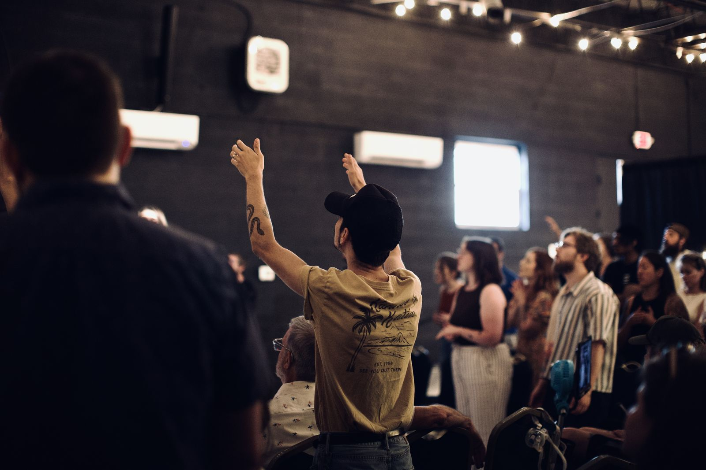

Selah Church · Fredericksburg, VA
The church was made for family.
Selah Church is a non-denominational church in Fredericksburg, Virginia. While we do many things as a church, at our core we believe the Church was made for family. More than a service to attend, we strive to be a community where people are known, loved, and encouraged to follow Jesus together.
Scroll